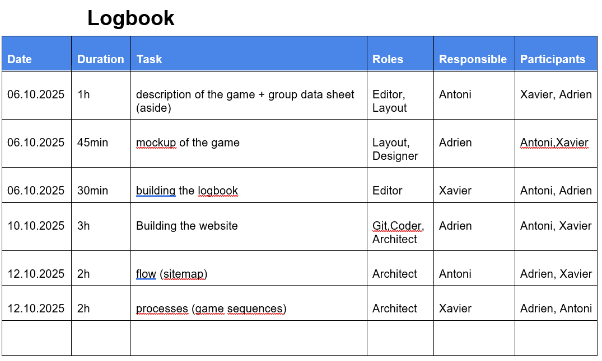

Journal de bord de votre projet
Par Jean Dupont le 5/02/2024 à 09:00
Dans le journal de bord vous trouverez les rôles attribués à chaque membre du groupe et les tâches réalisées. Il permet de garder une trace claire de la progression et d’assurer une bonne coordination entre les participants. ,
Le code source de l'application est disponible sur le github du projet.